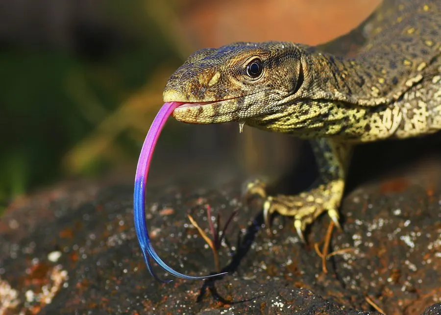

爬行动物 · 动物界
孟加拉巨蜥 Varanus bengalensis

南亚常见的陆栖巨蜥，体长可达 1.5 米，食性广、适应力强，因皮革贸易被大量捕捉，受国际公约保护。
- 分类
- 门脊索动物门纲爬行纲目有鳞目科巨蜥科属巨蜥属
- 栖息环境
- 南亚的森林、灌丛、农田、荒漠边缘与岩石地带
- 地理分布
- 印度、巴基斯坦、斯里兰卡、孟加拉国等南亚国家
- 保护级别
- IUCN 暂无评估；CITES 附录 I；非中国原产
物种志
孟加拉巨蜥体长 1–1.5 米，个别可达 1.75 米，身体粗壮，吻部略尖，四肢短而有力，尾部侧扁；体色以灰褐、黄褐或橄榄色为底，背部和四肢散布浅黄色斑点与环纹，头部和颈部有细密的鳞片，喉部皮肤松弛。
它分布于印度、巴基斯坦、斯里兰卡、孟加拉国等南亚地区，栖息于森林、灌丛、农田和荒漠边缘，白天在地面活动，捕食昆虫、鼠类、鸟类、蜥蜴、蛇类和腐肉，也吃鸟蛋和动物尸体。它是卵生蜥蜴，雌蜥在土洞或白蚁丘中产卵 15–30 枚，孵化期约 6–8 个月。孟加拉巨蜥因皮革贸易被大量捕捉，野外数量下降，已被列入国际公约附录 I；它在中国没有自然分布，属于非中国原产的受保护物种。
形态与习性
- 食性昆虫、鼠类、鸟类、蜥蜴、蛇类和腐肉
- 体长1–1.5 m，最长约 1.75 m
- 寿命约 10–20 年
- 繁殖卵生，15–30 枚，孵化约 6–8 个月
- 活动节律昼行性，地面活动
- 保护CITES 附录 I，国际贸易受严格限制
趣味知识
- 孟加拉巨蜥是南亚最常见的巨蜥之一，从森林到农田都能见到。
- 它因皮革贸易被大量捕捉，现被列入国际公约附录 I。
- 孟加拉巨蜥食性很杂，连动物尸体和鸟蛋都吃。